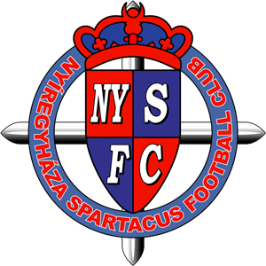

2013-2014-től 20 csapat, majd 2024-2025-től 16 csapat versenyez.
A versenyt a Magyar Labdarúgó-szövetség (MLSZ) szervezi minden évben.
Az 1901-ben alapított NB II a magyar labdarúgó-bajnokság másodosztálya. Korábban gyakran hívták a másodosztályt NB I/B-nek, illetve 1998-tól 2000-ig NB I-nek, ekkor az NB II a harmadosztályt jelentette.
2013-2014-től 20 csapat, majd 2024-2025-től 16 csapat versenyez.
A versenyt a Magyar Labdarúgó-szövetség (MLSZ) szervezi minden évben.

Az első két helyezett feljut NB I-be.
Az utolsó három helyezett kiesik NB III-ba.
| Csapat | Város | Stadion |
|---|---|---|
| Aqvital FC Csákvár | Csákvár | Tersztyánszky Ödön Sportközpont |
| Békéscsaba 1912 Előre | Békéscsaba | Kórház utcai stadion |
| Budafoki MTE | Budapest | Promontor utcai stadion |
| Budapest Honvéd FC | Budapest | Bozsik Aréna |
| BVSC-Zugló | Budapest | Szőnyi úti Stadion |
| FC Ajka | Ajka | Városi Szabadidő- és Sportcentrum |
| Gyirmót FC Győr | Győr | Alcufer stadion |
| HR-Rent Kozármisleny | Kozármisleny | Kozármislenyi Stadion |
| Kisvárda FC | Kisvárda | Várkerti Stadion |
| KolorCity Kazincbarcika SC | Kazincbarcika | Kolorcity Aréna |
| Mezőkövesd Zsóry FC | Mezőkövesd | Mezőkövesdi Városi Stadion |
| Opus Tigáz Tatabánya | Tatabánya | Grosics Gyula Stadion |
| Soroksár SC | Budapest | Szamosi Mihály Sporttelep |
| Szeged-Csanád Grosics Akadémia | Szeged | Szent Gellért Fórum |
| Szentlőrinc SE | Szentlőrinc | Szentlőrinc SE Sporttelep |
| Vasas FC | Budapest | Illovszky Rudolf Stadion |
Az előző szezon győztese:
Nyíregyháza Spartacus FC
